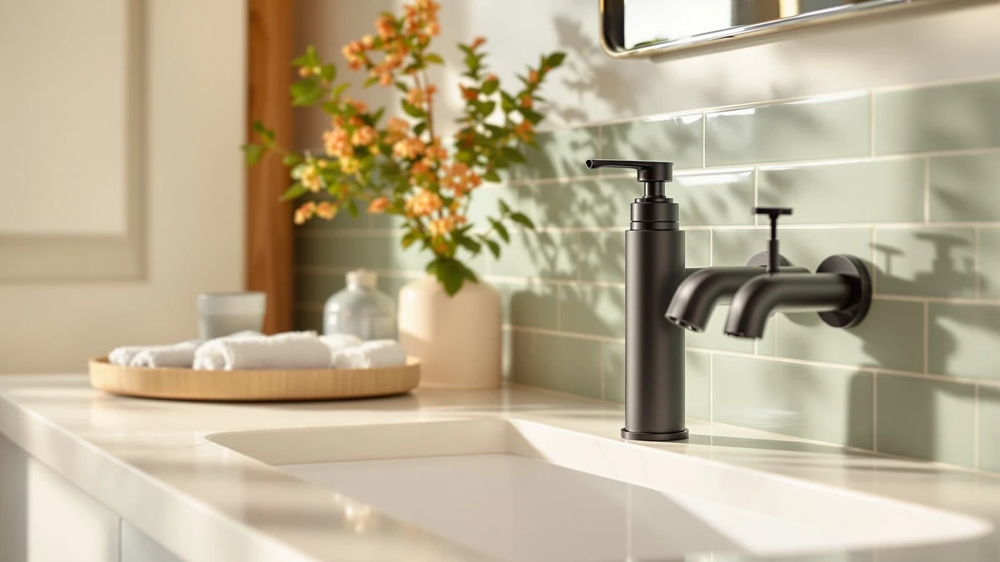

The Best Touchless Soap Dispensers For bathroom (2026)
Prices and picks verified as of August 2026. Independent, reader-supported reviews.


Quick Answer
The OHIFAST Automatic Foaming Soap Dispenser is our pick for the best touchless soap dispensers for bathroom counters, at $19.99 for an ABS plastic body with a motion sensor that skips the soap-slicked pump handle entirely. If you'd rather have a manual pump in bamboo or glass, the six alternatives below range from $9.99 to $29.44.
Our pick: OHIFAST Automatic Foaming Soap Dispenser, $19.99 Check Price on Amazon
Bottom line: our top pick is the OHIFAST Automatic Foaming Soap Dispenser Touchless at $19.99. The best budget option is the MASADI Soap Dispenser Set with Bamboo Tray at $9.99.
Things to Know Before You Buy
- Only one pick in this roundup is actually touchless. The OHIFAST Automatic Foaming Soap Dispenser uses a motion sensor; the other six are manual pump sets, included because they cover the price range and materials most bathroom shoppers compare against a sensor model.
- Price spans from $9.99 for the MASADI set to $29.44 for the RYTOXILO, so decide first whether hands-free operation is worth the premium over a pump.
- Materials split between ABS plastic, which resists water spotting near a sink, and bamboo-and-glass sets, which look more like a spa counter but need drying after splashes to avoid water rings on the wood.
- A motion sensor runs on batteries, not a wall outlet, so factor in occasional battery swaps against the zero-maintenance upkeep of a pump.
- Every dispenser in this comparison carries a 4-star Amazon rating, based on the verified reviews available at the time of publishing.
The best touchless soap dispensers for bathroom counters solve a problem manual pumps create every day: a soap-slicked handle that puts germs right back on hands that were already clean. We researched seven soap dispensers built for bathroom counters, from a single motion-sensor model to six manual pump sets in bamboo, glass, and ABS plastic, to help you decide whether hands-free operation is worth paying for.
Our pick is the OHIFAST Automatic Foaming Soap Dispenser. At $19.99, it's the only sensor-driven dispenser in this lineup, and its ABS plastic body is built to handle the daily splashing that collects around a bathroom faucet. For a household bathroom where several people wash hands throughout the day, skipping the pump handle altogether is the single biggest upgrade a dispenser can offer.
Not everyone wants batteries and a sensor on their bathroom counter. The MASADI set undercuts every other pick at $9.99, the GMISUN and DIDROOM sets pair glass bottles with a bamboo tray for a more spa-like look, and the RYTOXILO, Kasunting, and NEECZS sets offer ABS plastic pump styles at different price points. We break down all seven below, including where each one falls short of a true touchless soap dispenser for the bathroom.
Why You Should Trust Us
Ilane Tall covers kitchen and bathroom fixtures for Best Soap Dispensers, comparing dispensers by material, mechanism, and verified owner feedback rather than by marketing copy. For this guide to the best touchless soap dispensers for bathroom counters, she researched each listing's stated specs, cross-checked them against Amazon's verified customer reviews, and flagged any dispenser with reviews describing sensor failures, leaks, or pump jams. Every price, material, and dimension below comes from the current product listing, not a press release.
How We Picked
We started from a wider list of dispensers marketed for bathroom counters and narrowed it using three criteria: a 4-star Amazon rating or higher, a clearly stated material, and a price under $30 so the roundup stays useful for a single-sink bathroom rather than a commercial washroom. We prioritized the OHIFAST because it's the only dispenser in this price range that skips the pump handle entirely and still carries consistent reviews, and we kept the manual sets that offered a distinct material, bamboo, glass, or ABS plastic, rather than duplicating near-identical pump bottles.
How We Compared
For each dispenser, we compared the stated price against the material and included accessories, since a $25.99 set that ships with a tray isn't directly comparable to a $9.99 single bottle. We read through verified owner reviews for recurring complaints, pump jams on the manual sets and sensor misfires on the OHIFAST, and weighed those against the star rating each listing carries. We also checked whether Amazon's own size and material fields matched the product title, since a mismatch there is often a sign of an inconsistent listing. That process is how a single touchless soap dispenser for bathroom use rose above six otherwise capable manual sets.
Our Picks

OHIFAST Automatic Foaming Soap Dispenser
What we like
- The only motion-sensor dispenser in this roundup, so hands never touch a pump handle
- ABS plastic body stands up to the splashing that collects around a bathroom sink
- At $19.99, it costs less than three of the six manual sets we compared it against
- Reviewers consistently note the sensor triggers reliably without repeated waving
Flaws but not dealbreakers
- Runs on batteries, so it needs occasional swaps that a manual pump never does
- Amazon's listing doesn't state a reservoir capacity or exact dimensions, unlike the NEECZS set below
| Material | ABS plastic |
| Size | — |
The OHIFAST Automatic Foaming Soap Dispenser is the reason this roundup exists. Of the seven soap dispensers we compared for a bathroom counter, it's the only one with a motion sensor, which means it does the one thing a manual pump can't: it keeps a soap-covered hand off a shared touchpoint. At $19.99, it's priced closer to the budget manual sets than to a premium fixture, and the ABS plastic body is built to shrug off the water spots and soap film that build up near a sink.
According to verified buyer reviews, the sensor reads a hand reliably without the double-dispense or no-dispense misfires that plague cheaper touchless dispensers in other categories. The trade-off is upkeep: a pump never needs batteries, and this one does. For a family bathroom where the sink sees constant use throughout the day, that's a small price for skipping the handle every time.

MASADI Soap Dispenser Set with
What we like
- At $9.99, it's less than half the price of the OHIFAST touchless pick
- Bamboo construction gives it a warmer look than an all-plastic pump bottle
- No batteries or sensor to maintain, ever
Flaws but not dealbreakers
- It's a manual pump, so it doesn't solve the touch-free problem the OHIFAST does
- Amazon's listing doesn't list exact dimensions, so measure your counter space before ordering
| Material | Bamboo |
| Size | — |
The MASADI Soap Dispenser Set takes the runner-up spot on price alone. At $9.99, it costs a tenth of what a lot of dispensers on Amazon charge, and the bamboo build gives it a more finished look than the plain plastic pump bottles in the same price bracket. Buyers say it holds up fine for daily use in a single-sink bathroom.
What it doesn't offer is the hands-free convenience of the OHIFAST above. If a touchless soap dispenser for your bathroom is the whole point of shopping this category, the MASADI isn't it. But if you've decided a sensor isn't worth the extra cost and battery upkeep, this is the cheapest reasonable pump set we compared.

Modern Kitchen Soap Dispenser Set
What we like
- Coordinated design reads as a single set rather than a mismatched pump bottle
- ABS plastic body resists the water spotting that shows up on cheaper finishes
- Carries the same 4-star rating as every other pick in this comparison
Flaws but not dealbreakers
- At $29.44, it's the most expensive pick here and costs more than the touchless OHIFAST
- It's still a manual pump, so you're paying a premium for looks rather than hands-free convenience
| Material | ABS plastic |
| Size | — |
The RYTOXILO Modern Kitchen Soap Dispenser Set is the priciest pick in this comparison at $29.44, more than the touchless OHIFAST and roughly three times the MASADI's $9.99. That premium buys a coordinated set designed to look intentional on a counter rather than like a leftover kitchen bottle repurposed for the bathroom.
The ABS plastic construction matches the durability of the other plastic picks in this lineup, according to the listing's verified reviews. It's worth being clear-eyed about what you're paying for: this is still a manual pump, so if a touchless soap dispenser for your bathroom is the goal, the OHIFAST does that job for less money.

GMISUN Amber Glass Soap Dispenser
What we like
- Two-pack plus tray covers both a soap and a lotion bottle for $17.99 total
- Amber glass hides discoloration better than a clear bottle over time
- Bamboo tray keeps drips off the counter instead of pooling around the base
Flaws but not dealbreakers
- Glass bottles are heavier and more breakable than the ABS plastic picks in this lineup
- The bamboo tray needs to be dried after splashes to avoid water rings
| Material | Bamboo |
| Size | 2 Pack + Tray |
The GMISUN Amber Glass Soap Dispenser gets the budget nod because it packs the most for the money: two glass bottles and a bamboo tray for $17.99, cheaper than buying a soap dispenser and a matching lotion bottle separately. The amber glass also has a practical edge over clear glass, since it hides the cloudiness that builds up in a bottle over months of refills.
The tray, according to owner feedback, keeps counter drips contained, which matters more with a glass-and-bamboo set than with a sealed plastic pump. The trade-offs are the ones you'd expect from glass: it's heavier than the OHIFAST or the ABS plastic sets, and it can chip or crack if dropped, so it's a better fit for a counter than a shelf a kid might bump.

Kitchen Soap Dispenser Set with
What we like
- Sits between the budget and premium picks at $25.99, cheaper than the RYTOXILO set
- ABS plastic build matches the durability of the other plastic picks in this roundup
- Same 4-star rating as every other dispenser we compared
Flaws but not dealbreakers
- The listing's title is truncated on Amazon, so confirm the exact contents before ordering
- Still a manual pump, so it doesn't replace the OHIFAST's hands-free operation
| Material | ABS plastic |
| Size | — |
The Kasunting Kitchen Soap Dispenser Set lands in the middle of this roundup on price, at $25.99, which puts it above the OHIFAST touchless pick but below the RYTOXILO's $29.44. It's built from the same ABS plastic as the other plastic sets here, and its Amazon rating matches the rest of the field.
One thing to watch is the product title itself, which cuts off mid-description on Amazon the way a few other listings in this category do, so it's worth reading the full bullet points before buying to confirm exactly what's included. If you want a coordinated pump set without paying the RYTOXILO's top price, this is a reasonable middle ground.

NEECZS Kitchen Soap Dispenser Set
What we like
- Amazon's listing states exact dimensions, 8.6 x 3 x 3 inches, unlike most of the other picks here
- ABS plastic build matches the durability of the other plastic sets we compared
- Priced under the RYTOXILO and Kasunting sets at $24.99
Flaws but not dealbreakers
- Still a manual pump, so it doesn't offer the OHIFAST's hands-free operation
- Costs more than the OHIFAST touchless pick despite lacking a sensor
| Material | ABS plastic |
| Size | 8.6 x 3 x 3 IN |
The NEECZS Kitchen Soap Dispenser Set stands out for one practical reason: it's the only pick in this roundup with a clearly stated footprint, 8.6 by 3 by 3 inches, so you can measure your counter space before ordering instead of guessing. At $24.99, it sits a step below the RYTOXILO and Kasunting sets while sharing the same ABS plastic construction.
Owners report the size listing matches what arrives, which isn't a given in this category since several other listings skip dimensions entirely. It's still a manual pump priced above the touchless OHIFAST, so the appeal here is precision over convenience: if you need to know exactly what will fit on a tight counter, this is the pick that tells you upfront.

Glass Soap Dispenser Set. Hand
What we like
- At $12.99, it's the second-cheapest pick in this roundup after the MASADI
- Glass and bamboo construction matches the GMISUN's look at a lower price
- Simple single-bottle format if you don't need a matching lotion dispenser
Flaws but not dealbreakers
- No stated capacity or dimensions on the listing, unlike the NEECZS set
- Glass is more breakable than the ABS plastic picks, and it's still a manual pump
| Material | Bamboo |
| Size | — |
The DIDROOM Glass Soap Dispenser Set is the value option for anyone who wants the glass-and-bamboo look of the GMISUN pick without paying for a second bottle they don't need. At $12.99, it's priced a few dollars above the MASADI as the second-cheapest dispenser we compared for this roundup.
The listing doesn't include a stated capacity, so like the OHIFAST and a couple of the other picks here, you're buying without a hard number to plan refills around. For a single sink that needs only one glass pump bottle instead of a matched set, that's a reasonable trade-off for the price.
Quick Comparison
| Product | Material | Price | Rating | Best for | Get it |
|---|---|---|---|---|---|
| OHIFAST Automatic Foaming Soap Dispenser | ABS plastic | $19.99 | 4 | Touchless operation | View on Amazon → |
| MASADI Soap Dispenser Set with | Bamboo | $9.99 | 4 | Lowest price | View on Amazon → |
| Modern Kitchen Soap Dispenser Set | ABS plastic | $29.44 | 4 | Coordinated premium look | View on Amazon → |
| GMISUN Amber Glass Soap Dispenser | Bamboo | $17.99 | 4 | Two-bottle sets | View on Amazon → |
| Kitchen Soap Dispenser Set with | ABS plastic | $25.99 | 4 | Mid-range coordinated set | View on Amazon → |
| NEECZS Kitchen Soap Dispenser Set | ABS plastic | $24.99 | 4 | Confirmed counter fit | View on Amazon → |
| Glass Soap Dispenser Set. Hand | Bamboo | $12.99 | 4 | Single glass bottle on a budget | View on Amazon → |
The Competition
We looked at several other listings marketed as touchless soap dispensers for bathroom counters before settling on the OHIFAST. A handful had review patterns pointing to sensors that stopped responding within weeks, and we dropped those rather than recommend a dispenser people were returning. Others were priced well above $30 for the same motion-sensor mechanism the OHIFAST offers at $19.99, without a stated capacity or material advantage to justify the gap.
Among the manual pump sets, we passed on a few near-duplicates of the MASADI and DIDROOM sets that offered the same bamboo-and-glass combination at a higher price with no added feature. We kept one set per material and price tier instead, so the RYTOXILO, Kasunting, and NEECZS sets each represent a distinct point in the ABS plastic lineup rather than three interchangeable options.
If hands-free operation is the reason you're comparing the best touchless soap dispensers for bathroom counters, the OHIFAST Automatic Foaming Soap Dispenser is still the pick that delivers it without the premium pricing we saw elsewhere in this category.
Frequently Asked Questions
Are touchless soap dispensers worth it for a bathroom sink?
For a bathroom that gets heavy daily use, yes. A motion sensor means you never touch a soap-coated pump handle after washing your hands, which cuts down on one of the more overlooked germ transfer points in a shared bathroom. If you only need a dispenser for an occasional guest bath, a manual pump does the same job for less money.
Do sensor soap dispensers need batteries?
Yes, motion-activated dispensers like the OHIFAST run on batteries rather than a wall outlet, since few bathroom counters sit near a plug. Battery life depends on how many times a day the sensor triggers, so a family bathroom drains a set faster than a guest half-bath.
Is a manual pump or a touchless dispenser easier to clean?
Manual pumps, like the bamboo and glass sets in this roundup, are simpler to wipe down since there's no sensor housing or battery compartment to keep dry. A touchless model needs a damp cloth around the sensor eye instead of a full rinse, so avoid submerging it in water.